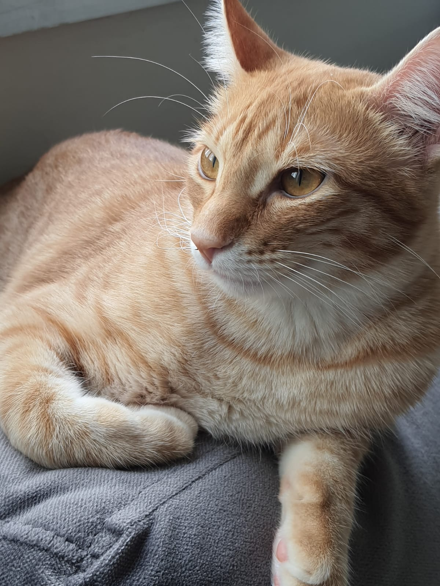

Me chamo Aline Faria Morais, sou de Taubaté no interior do estado de São Paulo, tenho 19 anos e estou no primeiro semestre do curso Ciência da Computação da UFFS no campus Chapecó.
Bem, esse é o meu site, ele é bem simples, mas foi o melhor que eu consegui fazer. Espero que vocês tenham gostado, e por favor Prof. Andrei e Prof. Geomar me dê um 10.
Meu presente para vocês é a foto do Sushi, pois ele é lindo.
E por último vai a minha playlist favorita do momento
Playlist Maravilhosa